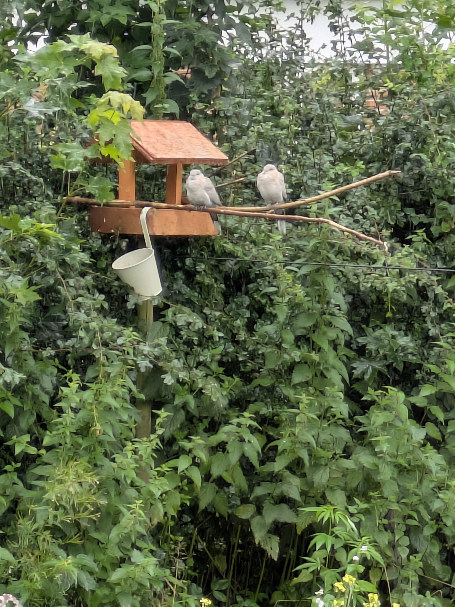

Et hjemligt eksperiment i grøn livsstil, håb og handling – uden perfektion.
Vi er en familie, der prøver at leve under de planetære grænser 🌍
Fedt du er her og velkommen til!
Du er landet et sted for trætte, håbefulde, nysgerrige – og måske en smule rebelske – sjæle 🌱
Her deler vi hverdagsmagi, vilde eksperimenter og ærlige spørgsmål fra et liv med unger, høns og el-ladcykel.
En meget dejlig ferie er forbi, som vi har brugt i det lille hjem. Vi har blandt andet samlet en del af sommerens planter og bær, nu venter vi på de første frugter. Æbler, blommer mm. er klar til plukning.
Vi havde fået 3 forskellige typer myrer, så for ikke at skulle fjerne dem med gift eller andet, gravede jeg hele terrassen op for at finde dronningerne og flytte dem. Derudover har vi brugt specielt sand mm. der, hvor vi ikke ønsker, at de flytter ind igen.
Et lille glimt ind i vores skønne vild med vilje have

Et par spurve, der hygger sig en mandag formiddag
Planlæg dine måltider
En af de nemmeste måder at reducere madspild på er ved at planlægge dine måltider for ugen. Her er nogle tips til, hvordan du kan komme i gang:
Lav en madplan: Sæt dig ned en gang om ugen og planlæg, hvad du vil spise hver dag. Dette hjælper dig med at købe kun de ingredienser, du har brug for.
Lav en indkøbsliste: Baseret på din madplan, lav en indkøbsliste og hold dig til den, når du handler. Dette hjælper med at undgå impulskøb.
Opbevar maden korrekt: Lær, hvordan du bedst opbevarer forskellige typer mad for at forlænge deres holdbarhed. For eksempel bør nogle frugter og grøntsager ikke opbevares sammen.
Genbrug rester: Vær kreativ med dine rester. Mange måltider kan omdannes til nye, lækre retter. For eksempel kan grøntsagsrester bruges i supper eller omeletter.
Del dine ideer med andre
Vi opfordrer dig til at dele dine egne ideer og tips til at reducere madspild med os. Hvordan planlægger du dine måltider, og hvad er dine yndlingsopskrifter med rester?
🤔 Månedens dilemmaer
Daglige Valg:
Du står i supermarkedet og skal vælge mellem to produkter:
Produkt A: Et lokalt produceret produkt, der er lidt dyrere og kommer i plastikemballage.
Produkt B: Et billigere produkt, der er økologisk, men importeret fra udlandet og emballeret i bæredygtigt materiale.
Overvejelser:
Hvilket produkt vælger du, og hvorfor? Tænk over følgende faktorer:
Miljøpåvirkning af transport vs. lokal produktion.
Bæredygtighed af emballage.
Økonomiske aspekter og dit budget.
Støtte til lokale producenter vs. økologisk landbrug.
Del dine tanker med andre
Vi opfordrer dig til at dele dine tanker og valg. Hvad vejer tungest for dig, når du træffer beslutninger om bæredygtighed?